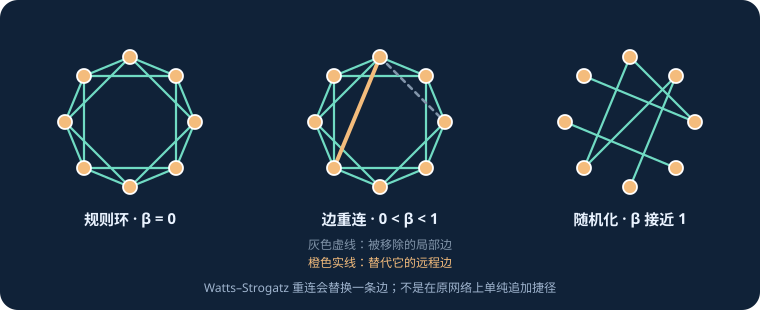

SMALL-WORLD NETWORKS / LOCAL CLUSTERS, GLOBAL SHORTCUTS
少量远距离连接，如何让局部紧密的网络变得全局可达？
局部抱团与全局通达之间的张力
社交关系常有明显的局部聚集：你的两位朋友也可能彼此认识。若网络只由局部邻居组成，节点之间的远距离通信却可能需要经过许多中间人。反过来，完全随机的连接容易产生短路径，却未必保留真实社交网络中的局部团簇。小世界网络研究的核心问题，就是理解局部高聚集与全局短路径如何同时出现。

“六度分隔”是一项有边界的实验结果
Stanley Milgram 的小世界实验让美国不同地区的参与者把信件沿熟人关系转交给一位目标人物。Travers 与 Milgram 在 1969 年发表的分析报告：296 条发起链中有 64 条抵达目标；在这 64 条完成链中，起点与目标之间平均有 5.2 位中间人。这个数字描述的是成功抵达的链条，而不是所有尝试的平均长度。
因此，“任何两个人之间必然只隔六个人”不是实验可以证明的结论。未完成链条、参与者选择、熟人关系的定义和目标人物的可识别性都会影响结果。这个研究的重要贡献是把社会可达性转化成可测量的问题，而不是给全人类网络提供一个精确不变的常数。
Watts–Strogatz 模型：从规则环开始，逐条重连
模型从 n 个顶点组成的环形规则网络开始。每个顶点连接左右各 K/2 个最近邻，其中 K 是偶数。随后按固定顺序检查每条边，以概率 β 把该边的一端重新连接到一个随机选择的顶点，同时避免自环和重复边。这里描述的是经典重连版本；Newman–Watts 变体则通过增加捷径边构造网络，两者不应混称。
- β=0：规则环。局部邻居高度重叠，聚集系数较高；跨越整个环需要较多步。
- β 很小：少量捷径。大多数局部边仍保留，少数远距离边却能连接相隔很远的区域。
- β 接近 1：高度重连。网络逐渐接近随机图，平均路径较短，但原来的局部聚集结构被削弱。
对偶数度 K 的理想环形规则网络，初始聚集系数为 。在小重连概率下，聚集系数近似保持，而特征路径长度会快速下降。这一“路径先降、聚集后降”的中间区间就是小世界效应的直观来源。
调节重连概率 β
滑块展示的是模型机制的定性区间，不是一次随机模拟的测量值。真实的聚集系数和路径长度必须在固定 n、K、随机种子后运行算法计算。
少量重连区间：局部连接大多保留，少数捷径可能显著缩短全局路径。
小世界效应不等于“可以轻松搜索”
网络平均路径短，表示全局最短距离较小；它不保证一个只知道局部邻居的人能够找到目标。Kleinberg 的研究指出，若要在具有空间结构的网络中实现高效的分布式搜索，长距离连接的概率分布也很重要。可达性、最短路径长度和局部信息下的可导航性，是三个不同的问题。
经典 Watts–Strogatz 模型也不是所有社会网络的完整模型：它从规则格点出发，重连会改变部分节点度数，但度分布通常仍然集中在平均度附近，不会自然生成 Barabási–Albert 模型那种明显的重尾枢纽分布。选择模型时，应让模型假设与要解释的经验事实相匹配。
用多个重连概率比较结构
下面固定节点数与每个节点的初始度数，计算平均局部聚集系数，并在最大连通分量上计算平均路径。正式研究还应使用多个随机种子报告均值与离散程度，而不是把单个种子的结果当成普遍规律。
运行环境：Python 3.10+；安装依赖：python -m pip install "networkx>=3.3,<4"。
import networkx as nx
n, k = 500, 6
for beta in (0.0, 0.01, 0.05, 0.1, 1.0):
G = nx.watts_strogatz_graph(n, k, beta, seed=42)
lcc_nodes = max(nx.connected_components(G), key=len)
L_lcc = nx.average_shortest_path_length(G.subgraph(lcc_nodes))
C = nx.average_clustering(G)
print(f"beta={beta:>4.2f} C={C:.3f} L_LCC={L_lcc:.3f}")
assert G.number_of_nodes() == n
assert all(degree <= n - 1 for _, degree in G.degree())
理解小世界网络时记住三件事
- 小世界结构同时关注局部聚集和全局路径长度，不能只看其中一个指标。
- 少量远距离捷径能够显著改变路径结构，而无需随机化所有边。
- 平均路径短不等于可导航；模型是否合适取决于真实网络的生成机制与研究问题。
参考资料
- Travers, J. & Milgram, S. (1969). An Experimental Study of the Small World Problem. Sociometry, 32(4), 425–443.
- Watts, D. J. & Strogatz, S. H. (1998). Collective dynamics of ‘small-world’ networks. Nature, 393, 440–442.
- Kleinberg, J. (2000). The Small-World Phenomenon: An Algorithmic Perspective. Proceedings of the 32nd ACM Symposium on Theory of Computing.
- Newman, M. E. J. (2010). Networks: An Introduction. Oxford University Press.